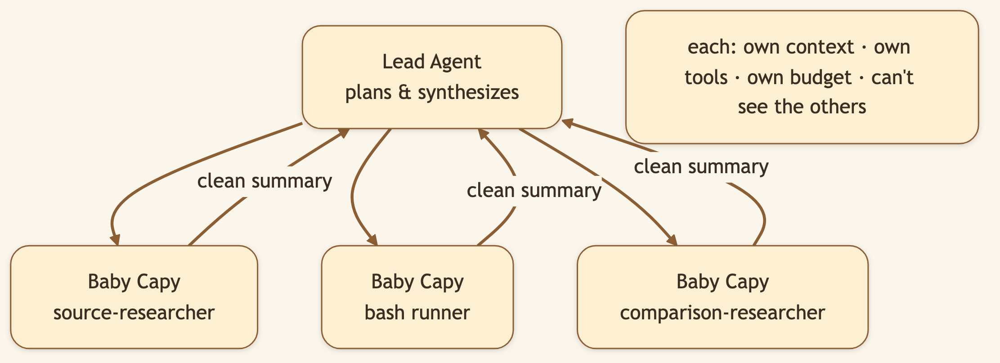
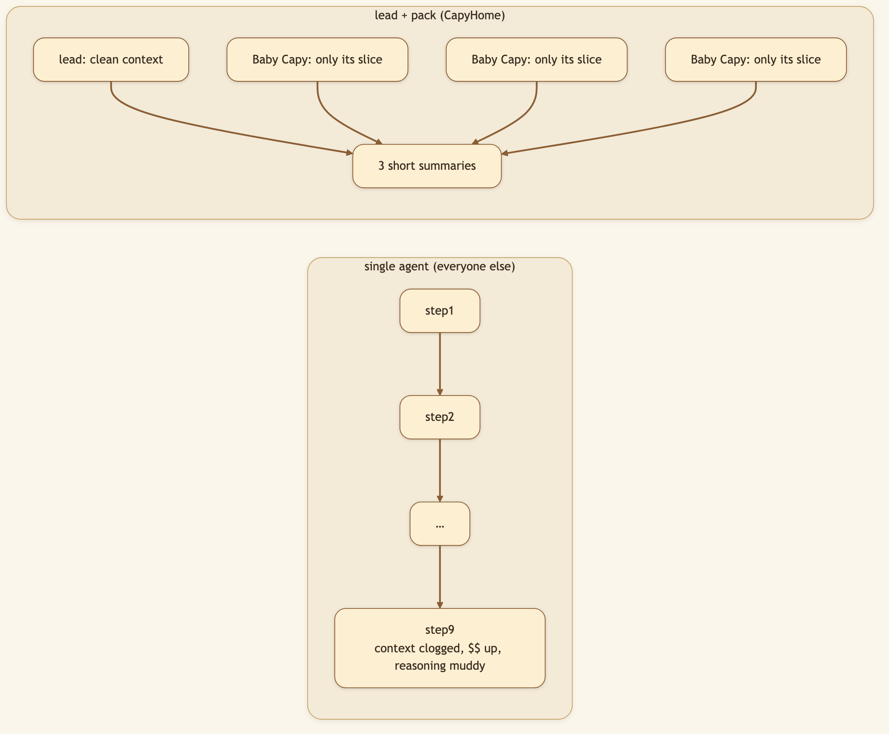
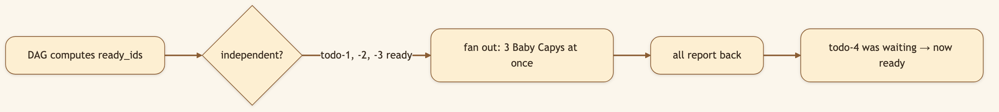

LinkedIn hook (use as the post's first line): "Most 'AI agents' are a single chat loop doing one thing at a time, with a context window slowly clogging with junk. We run it like a team instead: one lead, a pack of parallel sub-agents, each in its own clean room." Audience: LinkedIn → Medium. Agent builders, eng leaders, anyone who's watched a single-threaded agent crawl through fan-out work.
Give a single agent a big task and two things go wrong. It's serial — one source, one section, one check at a time. And its context degrades — by step nine the window is clogged with the debris of steps one through eight, and reasoning gets muddy and expensive.
The fix is the one human teams discovered long ago: divide the work, and give each person a clean desk.
🖼️ [User add: image containing — the activity timeline with multiple live "Baby Capy — {type}" delegates running at once. Capture from a real fan-out task in the running app.]
CapyHome's lead agent doesn't do everything itself. It breaks a task into pieces and spawns Baby Capy sub-agents — up to three at once per turn. Each gets its own scoped context, its own tools, and its own termination conditions (a turn budget and a timeout). Critically, sub-agents can't see each other's state — that isolation keeps reasoning clean and tokens cheap, and the lead gets back tidy summaries instead of a firehose.


This ties straight to Plan Mode's todo DAG. Steps with no unmet dependencies are ready — and ready steps fan out to Baby Capys simultaneously.

"Research three competitors" becomes three Baby Capys working at once; "then synthesize" waits for all three. Speed of parallelism, none of the chaos.
🖼️ [User add: image containing — a labelled diagram or screenshot mapping a plan's parallel todos to the Baby Capys executing them. Could be a clean annotated version of Diagram 3.]
general-purpose and bash for everyday work.source-researcher and comparison-dimension-researcher get a larger 25-turn budget for deep evidence-gathering; the autoresearch loop uses vault-source-researcher.task tool (available in Work Mode's full catalog, not Plan Mode's read-only one).Baby Capy — {type} …, so you can trace exactly who did what.Title card: "One AI agent is a bottleneck. Watch a whole team work."
[0:00–0:10] Hook: "Most AI agents do one thing at a time. For real work, that's painfully slow. Here's what parallel looks like."
[0:10–0:30] Screen — give a fan-out task: "I ask it to compare four tools across price, features, and support. A single agent would grind through these one by one."
[0:30–0:55] Screen — timeline lights up: "Instead — watch the timeline. Multiple Baby Capys spin up at once, each researching one tool in its own isolated context. The lead just waits for their summaries."
[0:55–1:10] Screen — synthesis step: "Once they all report, the lead synthesizes. Independent work in parallel; dependent work in order. Fast and coherent."
[1:10–1:20] Close: "The capybara is the animal everything gets along with. Calm on top, a coordinated team underneath. Open source, link below."
Give CapyHome a task with obvious parallel parts ("compare these four tools across price, features, and support") and watch the timeline light up with multiple Baby Capys at once.
Next: Skills → — how CapyHome learns new tricks without bloating.